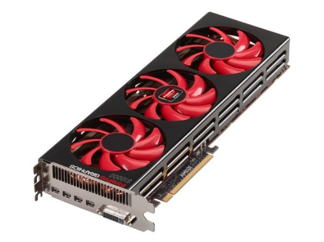

GPU

Η κάρτα γραφικών είναι τμήμα ενός υπολογιστή, το οποίο λαμβάνει δεδομένα από την Κεντρική Μονάδα Επεξεργασίας (CPU)
για να τα μετατρέψει σε εικόνα, η οποία θα προβληθεί στην οθόνη.
Η κάρτα γραφικών είναι μια πλακέτα κυκλωμάτων, η οποία περιλαμβάνει έναν επεξεργαστή και κυκλώματα μνήμης RAM.
Διαθέτει επίσης ένα μικροκύκλωμα (chip) εισόδου / εξόδου (BIOS), το οποίο αποθηκεύει τις ρυθμίσεις της κάρτας
και εκτελεί διαγνωστικά για τη μνήμη, την είσοδο και την έξοδο κατά την εκκίνηση του συστήματος. Ο επεξεργαστής
γραφικών της κάρτας, που ονομάζεται μονάδα επεξεργασίας γραφικών (Graphics Processing Unit, GPU), είναι παρόμοιος
με τον επεξεργαστή ενός υπολογιστή. Μια GPU, ωστόσο, έχει σχεδιαστεί ειδικά για την εκτέλεση των πολύπλοκων
μαθηματικών και γεωμετρικών υπολογισμών που είναι απαραίτητοι για την απόδοση γραφικών. Μερικές από τις
ταχύτερες GPUs διαθέτουν περισσότερα τρανζίστορ από το μέσο όρο της CPU. Μια GPU παράγει πολλή θερμότητα,
έτσι ώστε να είναι απαραίτητη η χρήση ενός ανεμιστήρα (μερικές κάρτες γραφικών διαθέτουν και σύστημα υδρόψυξης).
Εκτός από την επεξεργαστική της ισχύ, η GPU χρησιμοποιεί ειδικό προγραμματισμό για καλύτερη ανάλυση της χρήσης των
δεδομένων. Οι εταιρείες ATI και nVidia παράγουν τη συντριπτική πλειοψηφία των GPU για την παγκόσμια αγορά. Και οι
δύο εταιρείες έχουν αναπτύξει τις δικές τους καινοτομίες και βελτιώσεις για τις επιδόσεις των GPU. Για να βελτιωθεί
η ποιότητα της εικόνας, χρησιμοποιούνται οι εξής τεχνικές:
Anti aliasing πλήρους οθόνης (FSAA), που απαλύνει τις άκρες του τρισδιάστατου αντικειμένου
Ανισότροπο φιλτράρισμα (AF), το οποίο καθιστά τις εικόνες ευκρινέστερες.
Κάθε εταιρεία έχει επίσης αναπτύξει ειδικές τεχνικές για να βοηθήσει την GPU για την απόδοση καλύτερων χρωμάτων,
σκίασης, υφής και άλλων στοιχείων της εικόνας.
Σημαντικό χαρακτηριστικό, επίσης, σε μια κάρτα γραφικών είναι και ο ρυθμός ανανέωσης πλαισίων (frame rate).
Η αρχή λειτουργίας κινούμενων γραφικών στον υπολογιστή είναι η ίδια με αυτήν του κινηματογράφου: Προβάλλονται
στην οθόνη 24 διαδοχικές εικόνες (frames, πλαίσια) ανά δευτερόλεπτο, προκειμένου η κινούμενη εικόνα να εμφανίζει
σωστή ροή, χωρίς διακοπές, στο θεατή. Ο ρυθμός αυτός εξαρτάται τόσο από τον επεξεργαστή και τη μνήμη RAM που διαθέτει
η κάρτα όσο και από ειδικό λογισμικό, που συνήθως ενσωματώνεται σε αυτήν.